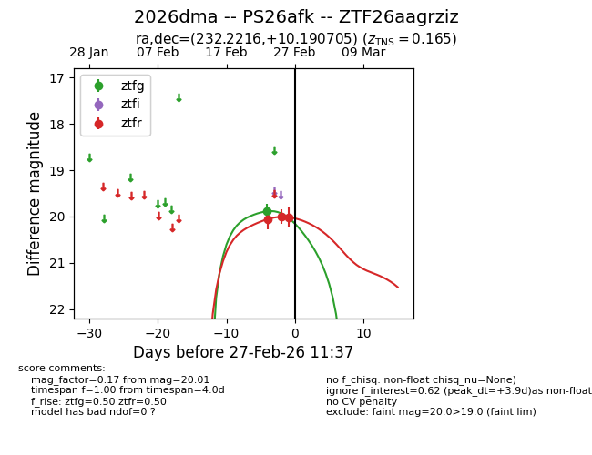
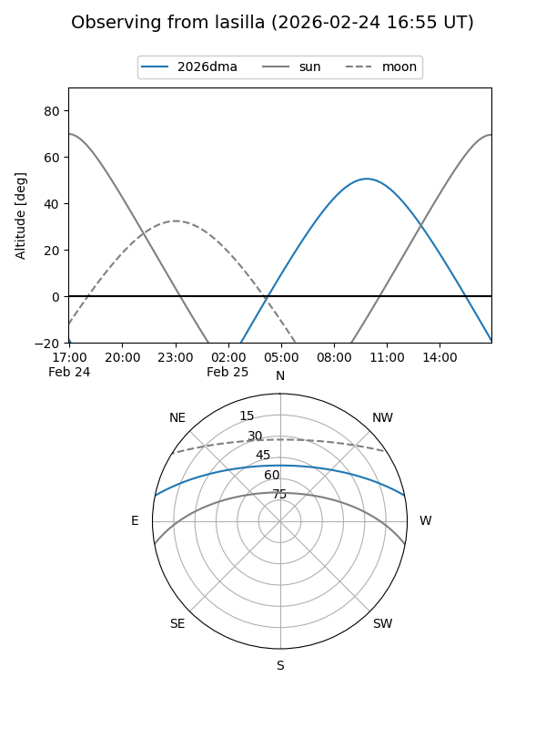
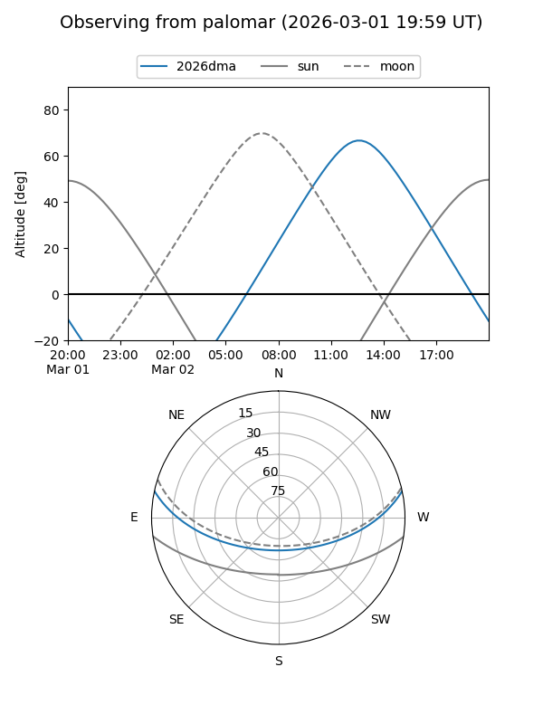
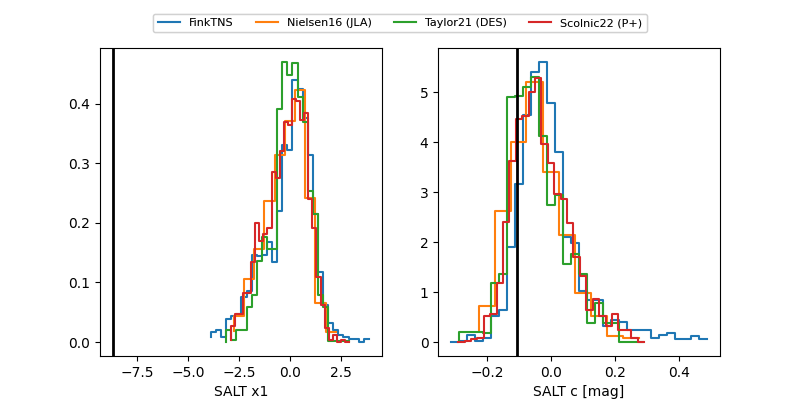

2026dma
Target 2026dma at 2026-02-27 11:38
Aliases and brokers:
FINK: link
Lasair: link
ALeRCE: link
TNS: link
YSE: link
alt names
ZTF26aagrziz (ztf,fink_ztf)
2026dma (tns,yse)
PS26afk (panstarrs)
Coordinates:
equatorial (ra, dec) = 232.2216,+10.19070
equatorial (HMS+DMS) = 15:28:53.19,+10:11:26.54
galactic (l, b) = (16.0427,+49.28085)
Flags:
confirmed ia
Photometry:
last ztfg=19.89, ztfr=20.01
1 ztfg, 3 ztfr detections
Lightcurve

Visibility


Additional plots
